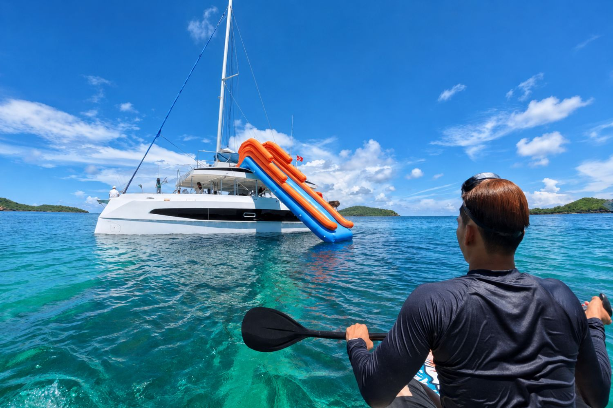

Có một kiểu im lặng chỉ xuất hiện trên biển vào buổi chiều. Không phải sự im lặng tuyệt đối — vẫn có tiếng nước vỗ vào hai thân tàu, tiếng dây buồm khẽ rung, tiếng ai đó cười ở mũi tàu — nhưng là thứ im lặng khiến bạn tự nhiên nói nhỏ lại. Bài viết này là để kể về năm giờ như thế: một chuyến Sunset Charter ở Phú Quốc, khung giờ mà Theia Yachting đặt từ 15:00 đến 20:00.
Chúng tôi không kể một chuyến đi cụ thể của ai. Chúng tôi dựng lại nó từ những gì con tàu thật sự có, những gì gói dịch vụ thật sự bao gồm, để khi bạn đặt chỗ, bạn biết chính xác mình đang bước vào điều gì.
15:00 — Khi chiếc xe dừng trước bến
Buổi chiều bắt đầu từ sảnh khách sạn chứ không phải ở bến tàu. Với du thuyền buồm 1360 – Coral II, xe đưa đón hai chiều từ khách sạn đã nằm sẵn trong gói. Đó là chi tiết nhỏ nhưng thay đổi cả tâm thế: bạn không phải tra bản đồ, không phải lo chỗ đỗ xe, không phải đến sớm “cho chắc”. Bạn chỉ cần xuống sảnh với đôi dép và chiếc túi nhẹ.
Coral II là một catamaran dài 13,6 mét, rộng 6,9 mét, đóng năm 2021. Con số 6,9 mét chiều ngang ấy là điều bạn cảm nhận đầu tiên khi bước lên: boong rộng một cách bất ngờ so với chiều dài. Thiết kế hai thân giúp tàu đứng vững trên mặt nước, và với tối đa 28 khách, nhóm của bạn — dù là gia đình mười người hay hội bạn hai mươi người — vẫn có đủ chỗ để mỗi người tìm được góc riêng.

15:30 — Ly đồ uống chào mừng và bản đồ không cần mở
Người ta hay nghĩ chuyến du thuyền là một lịch trình được lên sẵn từng phút. Thực tế, điều quý nhất của một chuyến thuê riêng là bạn không phải chia sẻ lịch trình với ai. Theia mô tả hành trình của Coral II là du ngoạn dọc vùng biển phía Nam của đảo, ghé những hòn đảo nhỏ lân cận — còn dừng ở đâu, dừng bao lâu, phụ thuộc vào gió, vào nước và vào chính nhóm của bạn.
Đồ uống chào mừng được mang ra khi tàu rời bến. Trái cây tươi theo mùa nằm trên bàn ăn ngoài trời có mái che. Nếu bạn hỏi một người từng đi nhiều chuyến tàu, họ sẽ nói: hãy dành mười phút đầu tiên chỉ để ngồi yên. Đừng vội chụp ảnh. Hãy để mắt quen với màu nước.
Điều xa xỉ nhất trên một du thuyền riêng không phải là chiếc ghế đẹp nhất, mà là việc không ai giục bạn đứng dậy.
16:30 — Xuống nước
Khi tàu neo ở một vịnh lặng, buổi chiều chuyển sang một nhịp khác. Gói của Coral II có sẵn dụng cụ lặn ngắm san hô, ván chèo SUP, dụng cụ câu cá và cầu trượt nước bơm hơi. Lũ trẻ (và không ít người lớn) sẽ chọn cầu trượt trước. Những người thích yên tĩnh sẽ đứng lên tấm SUP, chèo chầm chậm quanh thân tàu. Người kiên nhẫn nhất sẽ thả câu ở đuôi tàu và tuyên bố rằng con cá đầu tiên là của mình.
Lời khuyên của người kể chuyện: hãy xuống nước ít nhất một lần, kể cả khi bạn không định bơi. Ngồi ở mép thân tàu, thả chân xuống nước và nhìn lên con tàu từ dưới lên — đó là góc nhìn mà rất ít bức ảnh lưu giữ được, nhưng bạn sẽ nhớ.

17:30 — Bữa ăn khi nắng chuyển màu
Đồ ăn và thức uống trên tàu nằm trong gói. Đây là lúc khu vực dùng bữa ngoài trời của Coral II phát huy tác dụng: một chiếc bàn đủ dài để cả nhóm ngồi chung, có mái che cho những ai đã đủ nắng trong ngày. Bạn sẽ nhận ra rằng trên biển, người ta nói chuyện khác hẳn trên bờ — chậm hơn, ít nhìn điện thoại hơn.
Nếu nhóm bạn có một dịp đặc biệt — sinh nhật, kỷ niệm ngày cưới — đây là thời điểm hợp lý để mang bánh ra. (Hãy báo trước khi đặt chỗ để chúng tôi xác nhận với Theia về việc chuẩn bị.)
18:00 — Hoàng hôn không cần lời bình
Chúng tôi sẽ không mô tả hoàng hôn. Mọi bài viết về du lịch đều cố gắng làm điều đó và đều thất bại theo cùng một cách. Chỉ xin nói một điều thực tế: khung 15:00–20:00 được thiết kế để bạn ở trên mặt nước đúng lúc mặt trời xuống. Vị trí neo cụ thể do thuyền trưởng quyết định theo điều kiện thời tiết ngày hôm đó — và đó là quyết định bạn nên tin tưởng.
Mẹo nhỏ cho người thích chụp ảnh: lưới thư giãn ở mũi tàu là chỗ đẹp nhất để chụp ngược sáng, nhưng hãy cất máy đi trong năm phút cuối. Có những khoảnh khắc nên được giữ trong mắt hơn là trong máy.

19:30 — Pháo hoa và đường về
Một chi tiết ít ai để ý trong danh sách dịch vụ của Coral II: “Pháo hoa (tour buổi tối)”. Khi trời đã tối hẳn và đèn trên bờ bắt đầu sáng, đây là dấu chấm hết mà nhiều nhóm chọn cho buổi chiều của mình. Chiếc xe đưa đón lại chờ ở bến để đưa bạn về khách sạn. Hai mươi phút sau, bạn đã ở trong phòng, tóc còn mùi muối biển, và buổi chiều ấy đã thành một câu chuyện.
- Khung giờ Sunset Charter: 15:00–20:00 (5 giờ)
- Du thuyền: catamaran buồm 13,6 m, tối đa 28 khách, Phú Quốc
- Giá niêm yết: $1490 / nửa ngày 5 giờ, trọn tàu (không tính theo đầu người)
- Bao gồm: xe đưa đón, đồ uống chào mừng, đồ ăn và thức uống, trái cây, khăn tắm, dụng cụ lặn ngắm san hô, SUP, câu cá, cầu trượt bơm hơi, pháo hoa (tour buổi tối)
Nguồn thông tin: trang du thuyền 1360 – Coral II và trang Hỏi đáp của Theia Yachting (theiayachting.com/vi). Giá cập nhật ngày 20/11/2026, có thể thay đổi — vui lòng liên hệ để xác nhận.